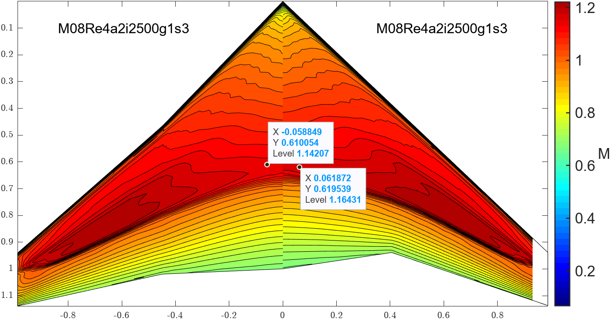
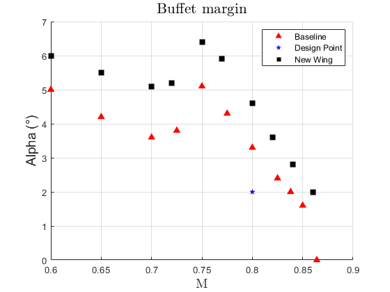

Problem
The goal was to optimise the transonic performance of a baseline swept wing (TWD24, aspect ratio 7.75, 25° sweep) at a Mach 0.8 cruise point — reducing shock and wave drag while preserving buffet margin, using the Korn technology factor (κ = MDD + 0.1·CL + t/c) as the headline efficiency metric. My individual contributions were the redesign of the crank-section 2D aerofoil and the twist-distribution study that shaped the final 3D wing's spanwise twist.
Approach
The project ran in two stages. In the 2D stage, the root, crank and tip sections were extracted from the baseline wing via the inverse Lock transformation and assessed with VGK at the equivalent 2D design Mach number (0.725, from M2D = cos(Λ)·M∞). New supercritical sections were then designed using VGKD in a weak-shock configuration to hit a target upper-surface pressure distribution, with XFOIL used afterwards to fine-tune camber, thickness and leading-edge radius. I led the redesign of the crank section, testing a range of NACA aerofoils to understand how thickness and camber changes shifted the shock location and drag balance, and studied the thickness-to-chord ratio sensitivity across sections.
In the 3D stage, the redesigned sections were assembled into a wing and evaluated with the Viscous Full-Potential (VFP) method at the design point (M = 0.8, Re = 4×10⁶, α = 2°) plus two off-design cases: a gust encounter and a high-speed manoeuvre. Rather than a formal optimiser, a systematic trial-and-error sweep of crank position, twist, taper and dihedral was used to find an effective combination. I ran the twist study: varying the twist angle applied to each of the three sections and tracking the resulting lift-to-drag ratio.
| Root twist | Crank twist | Tip twist | CL | L/D |
|---|---|---|---|---|
| 1.0° | 0.0° | -3.5° | 0.448 | 24.61 |
| 1.5° | 0.0° | -3.5° | 0.467 | 23.96 |
| 1.0° | 0.5° | -3.5° | 0.474 | 24.16 |
| 0.0° | 0.5° | -3.5° | 0.436 | 24.78 |
| 0.0° | 0.5° | -3.6° | 0.435 | 24.81 |
| 0.0° | 0.5° | -3.8° | 0.432 | 24.96 |
The trend was consistent: the root section benefited from a small positive twist (the exact amount depending on the camber already designed into that section), the crank section was best left close to untwisted to keep the flow smooth across the crank junction, and the tip section needed a negative twist of a few degrees to cut lift-induced and wave drag — directly improving the overall lift-to-drag ratio. These trends fed into the twist distribution used in both final wing candidates.
Result
The redesigned 2D sections improved lift-to-drag ratio by 15–30 counts over the baseline (root L/DNF rose from 24.95 to 55.28), mainly from reduced wave drag at the root and increased lift at the crank and tip. At the 3D level, two wing candidates were built from these sections and compared against the baseline:
| CL | L/D (design point) | Notes | |
|---|---|---|---|
| Baseline wing | 0.421 | 24.35 | — |
| Wing 1 | 0.409 | 25.05 | Best cruise efficiency; weaker shock, reduced wave & induced drag |
| Wing 2 | 0.393 | 22.55 | Outboard crank + root treatment; wider buffet margin, more fuel volume |
Wing 1 gave the best cruise lift-to-drag ratio, but Wing 2 — with the crank moved further outboard and a thicker root — showed a substantially wider buffet margin across both off-design cases (gust encounter and high-speed manoeuvre) at the cost of some cruise efficiency. Since safety margin was treated as the priority for a transonic wing, Wing 2 was selected as the final design, with the trade-off noted that its lower L/D would need to be offset by additional high-lift augmentation.


Limitations
The 3D design process was trial-and-error rather than a formal optimisation, so there is no guarantee the selected geometry is a true optimum within the design space. VGK, VGKD and VFP are viscous panel/full-potential methods rather than full RANS CFD, so shock-induced separation and strong viscous-inviscid interaction are only approximated. Wing 2's reduced cruise L/D relative to Wing 1 also pushes a system-level cost — extra high-lift augmentation — outside the scope of what this study designed.